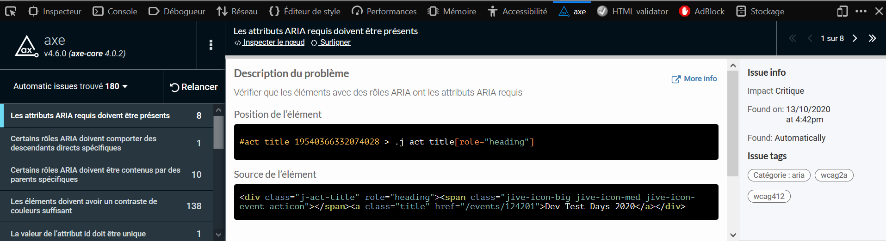
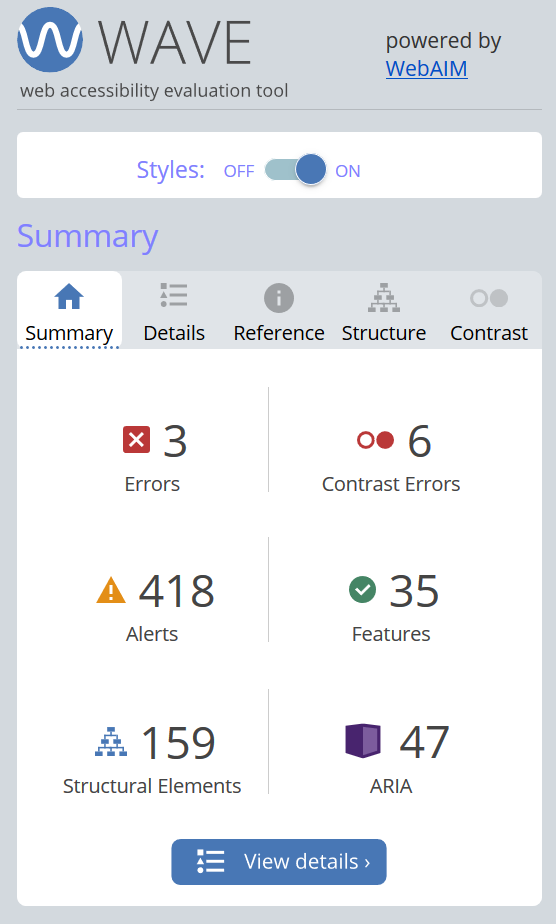

Extensions pour navigateur
Certaines extensions de navigateur (ou modules complémentaires) comme aXe de Deque ou Wave de WebAIM, permettent d’effectuer des tests automatiques dans des pages HTML. Cela permet d’identifier aisément les principales erreurs d’accessibilité, de recetter la qualité lors de vos développements et logiquement d’espacer les vérifications manuelles réalisées par les auditeurs en accessibilité. Ces outils de test automatique représentent l’outillage minimum de tout développement accessible et sont un prérequis à tout audit accessibilité.
Ce sont des outils rapides et légers qui permettent d’identifier ce qui peut être testé automatiquement, comme par exemple : « y’a-t-il une alternative textuelle sur cette image ? » : OUI / NON ou de détecter les erreurs de contraste (ratio, calculé).
Mais ils ne permettent par contre pas de qualifier définitivement ce qui est appelé en général « alerte » ou encore « warning », comme par exemple : « cette alternative textuelle est-elle pertinente ? », ces vérifications complémentaires ne peuvent être réalisées que manuellement. Dans la plupart des cas, les outils vous permettent d’aller inspecter directement le nœud de code correspondant.
Important :
- Ces outils facilitent l'évaluation humaine, permettent d’éviter les erreurs fréquentes et faciles à corriger et sensibilisent aux questions d'accessibilité.
- Les résultats obtenus ne reflètent pas le taux de conformité ou le niveau d’accessibilité du site inspecté mais permettent tout de même d’estimer une tendance.
- Les référentiels (RGAA et WCAG) sont mis à jour régulièrement, pensez donc à vérifier les dates de mises à jour de l’outil que vous sélectionnerez.
Testé par nos soins : aXe de Deque Systems #
Deque Systems propose aXe, une extension pour Chrome et une pour Firefox permettant d’effectuer une série de tests basés sur les critères d’accessibilité WCAG, remontant les erreurs dans un onglet de l’inspecteur web des outils développeur et proposant même dans la plupart des cas des pistes de solution.
La philosophie repose sur le fait de minimiser les faux positifs (erreurs qui n’en sont pas) et de proposer au-delà de la conformité stricte WCAG, une série de bonnes pratiques utiles aux développeurs.

Testé par nos soins : Wave de WebAIM #
Développé par WebAIM.org, même idée pour Wave à la différence près qu’il remonte également des alertes (demandent une vérification manuelle) et que les résultats sont présentés dans un encart à part. L’outil ajoute des icônes et des indicateurs directement dans la page testée afin de vous aider à cibler les erreurs et alertes.

Liens connexes #
- https://ffoodd.github.io/a11y.css/
- https://blog.clever-age.com/fr/2012/06/19/pagespeed-et-yslow-ne-sont-pas-des-indices-de-performance/
- https://www.matuzo.at/blog/building-the-most-inaccessible-site-possible-with-a-perfect-lighthouse-score/
Glossaire #
- CSS : Cascading Stylesheets, feuilles de style en cascade
- DOM : Document Object Model, modèle d’objet document